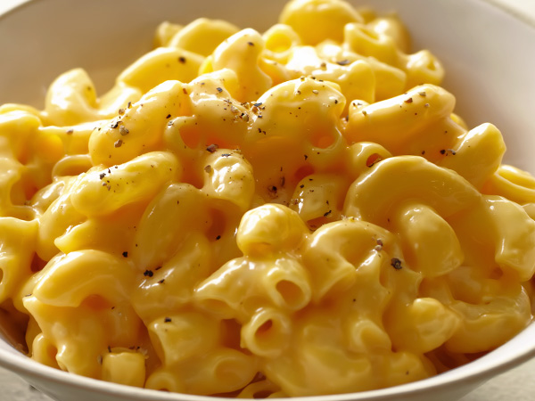

Макарошки
СПОСОБ ПРИГОТОВЛЕНИЯ1. В посуду с кипящей подсоленной водой (5–6 л на 1 кг макаронных изделий и 50 г соли) засыпать подготовленные изделия и варить до размягчения в бурно кипящей воде, периодически помешивая деревянной веселкой, чтобы не допускать прилипания их к дну посуды. Чем больше соотношение воды и макарон, тем быстрее закипит вода после закладки макаронных изделий, тем выше будет качество готового блюда. Продолжительность варки зависит от вида макаронных изделий. Макароны варят около 20–30 мин.
2. Сваренные макаронные изделия откинуть на сито, переложить изделия в посуду с растопленным маслом и перемешать деревянной веселкой, чтобы они не склеивались.
3. Сыр или брынзу натереть на терке. Макароны заправить сливочным маслом или маргарином, при отпуске посыпать тертым сыром. Можно подать тертый сыр отдельно на розетке.

Приятного аппетита!
Больше информации здесь \/ \/ \/
И.Н.Ф.А